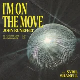
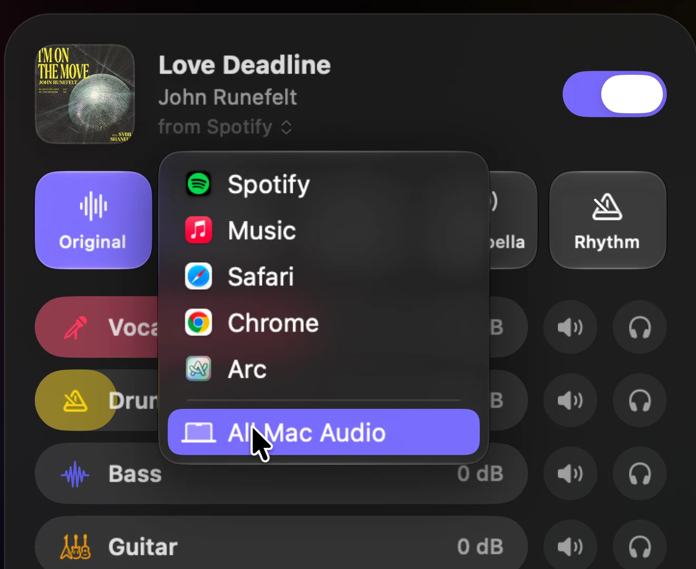

Take the vocals out of anything.
Prism splits whatever your Mac is playing into vocals, drums, bass and the rest, as it plays. Turn the singer off in Spotify, Apple Music, YouTube or any app, and keep the song.
One click changes the song.
Five presets for the ways you listen. Switch whenever you like, and the music keeps playing.

Or make your own mix. Every stem has its own level, mute and solo.
Works with any app.
Choose the app you’re listening in. For everything your Mac plays at once, choose All Mac Audio.

Six stems.
Vocals, drums, bass, guitar, keys and other. Drag a stem to set its level, click it to mute, or solo it.
A few seconds behind.
Prism plays the music a few seconds late so it can split it. Responsive is about 1.5 seconds behind, Balanced about 3 and Studio about 6. Studio sounds cleanest.
Runs on your Mac.
The music is split on your Mac. Nothing you play is uploaded.
Questions.
Which apps does it work with?
Spotify, Apple Music, TIDAL, Deezer and Amazon Music, plus Safari, Chrome and Arc for YouTube and everything else on the web. Any other app playing sound shows up in the list too, or choose All Mac Audio.
Is it live?
Yes. Prism plays a few seconds behind the original so it can split each moment cleanly: about 1.5, 3 or 6 seconds, depending on the setting you choose. Play, pause, skip and seek stay in step.
Does it change my music?
No. Prism only changes what you hear while it’s on. Your library, playlists and accounts stay exactly as they are, and turning Prism off plays the music as normal.
Does it need the internet?
Once, for a one-time 700 MB download that Prism needs to split music. After that it works offline.
Which Macs does it run on?
Macs with Apple silicon, running macOS 26 or later.
Is it free?
Yes. Prism is free and open source. Read the code, build it yourself or suggest a change on GitHub.
Take the vocals out of anything.
Turn the singer off, sing the lead yourself, or hear any part of a song on its own.